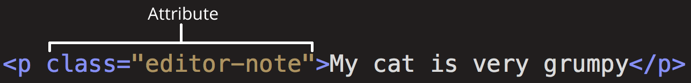

" HTML (Hepertext Markup Language)- это код, который используется для структурирования и отображения веб-страницы и ее контента. Например, контент может быть структурированным внутри множества параграфов, маркированных списков или с использованием изображений и таблиц данных. Или это может быть даже изображения или таблицы данных. Как видно из названия, эта статья даст вам базовое прнимание HTML и его функций."
Что такое HTML на самом деле?
HTML не является языком программирования; это язык разметки, и используется, чтобы сообщать вашему браузеру как отображать веб-страницы, которые вы посещаете. Он может быть сложным или простым, в зависимости от того, как хочет веб-дизайнер. HTML состоит из ряда элементов, которые вы используете, чтобы вкладывать или оборачивать различные части контента, чтобы заставить контент отображаться или действовать определенным образом. Ограждающие теги могут сделать слово или изображение ссылкой на что-то еще, могут сделать слова курсивом, сделать шрифт больше или меньше и так далее. Например, возьмем следующую строку контента:
My cat is very grumpy
Если мы хотим строку стоящую саму по себе, мы можем указать, что это параграм, заключая ее в тег параграфа (<p>) элементом:
<p> My cat is very grupmy </p>
Анатомия HTML элемента
Давайте рассмотрим <p> элемент параграфа более подробно.

- Открывающий тег: Состоит из имени этого элемента (в данном случае, р), заключенного в открывающие и закрывающие угловые скобки. Укзаывает, где элемент начинается или начинает действовать — в данном случа, где начинается параграф.
- Закрывающий тег: Это тоже самое, что и открывающий тег, кроме того, что он включает в себя косую черту перед именем элемента. Указывает, где элемент заканчивается — в данном слувае, где заканчивается параграф. Отсутствие закрывающего тега является одной из наиболее распространенных ошибок начинающих и может приводить к странным результатам.
- Контент: Это контент элемента, который в данном случае является просто текстом.
- Элемент: Открывающий тег, плюс закрывающий тег, плюс контент, равняется элементу.
Элементы также могут иметь атрибуты, которые выглядят так:
Атрибуты содержат дополнительную иниформацию об элементе, которую вы не хотите показывать в фактическом контенте. В данном случае, атрибут класса позваляет дать элементу идентификационное имя, которое может позже исползоваться для целевого элемента с информацией о стиле и прочих вещах.
Атрибут всегда должен иметь:
- Пространство между ним и именем элемента (или предыдущим атрибутом, если элемент уже имеет один или несколько атрибутов.)
- Имя атрибута, а затем знак равенства
- Открывающее и закрывающие кавычки, обернутые вокруг значения атрибута
Вложенные элементы
Вы также можете располагать элементы внутри других элементов — это называется вложением. Если мы хотим заявить, что наша кошка очень раздражена, мы можем обернуть слово "very" в <strong> элемент, это означает, что слово должно быть сильно акцентированно:
<p> My cat is <strong>very</strong> grumpy.</p>
Вы также должны убедиться, что ваши элементы вложены правильно: в примере выше мы открыли первым <p> элемент, затем <stong> элемент, потом мы должны закрыть сначала <strong> элемент, затем <p>. Приведенное ниже неверно:
<p> My cat is <strong>very grumpy.</p></strong>
Элементы должны открываться и закрываться правильно, поэтому они явно внутри или снаружи друг друга. Если они перекрываются как в примере выше, тогда ваш веб-браузер будет пытаться сделать наилучшее предположение на то, что вы пытались сказать, и вы также можете получить непредсказуемые результаты. Так что не стоит этого делать!
Пустые элементы
Некоторые элементы не имеют контента, и называются пустыми элементами. Возьмем <img> элемент, который мы уже имеем в нашем HTML:
<img src="images/firefox-icon.png" alt="My test image">
Он содержит два атрибута, но не имеет закрывающего </img> тега, и никакого внутреннего контента. Это потому, что элемент изображения не оборачивает контент для влияния на него. Его целью является вставка изображения в HTML страницу, и оказывается в нужном месте.
Анатомия HTML элемента
Это завершает основы отдельных HTML элементов, но они не очень полезны сами по себе. Теперь мы будем смотреть, как отдельные элементы объединяются в целую HTML страницу. Давайте вернемся к коду, который мы вкладывали в наш index.html пример (с которым мы в первые встретились в статье Работа с файлами):
Здесь мы имеем:
- <!DOCTYPE html> — доктайп. В прошлом, когда HTML был молод (около 1991/2), доктайпы должны были выступать в качестве ссылки на набор правил, которым HTML страница должна была следовать, чтобы считаться хорошим HTML, что могло означать автоматическую проверку ошибок и другие полезные вещи. Однако в наши дни, никто не заботится об этом, и это на самом деле просто исторический артефакт, который должен быть включен для того, что бы все работало правильно. На данный момент, это все, что вам нужно знать.
- <html></html>. Этот элемент оборачивает весь контент на всей странице, и иногда известен как корневой элемент.
- <head></head>. Этот элемент выступает в качестве контейнера для всего, чего вы пожелаете включить на HTML страницу, но не являющегося контентом, который вы показываете зрителям ваших страниц. К ним относятся такие вещи, как ключевые слова и описание страницы, которые вы хотите, чтобы появлялись в результатах поиска, CSS стили нашего контента, декларация набора символов, и другое.
- <body></body>. В нем содержится весь контент, который вы хотите показать пользователям, когда они посещают вашу страницу, будь это текст, изображения, видео, игры, проигрываемые аудио дорожки или что-то еще.
- <meta charset="utf-8"> — этот элемент устанавливает utf-8 кодировку вашего документа, которая включает в себя большинство символов из всех известных человечеству языков. По сути, теперь документ может обрабатывать любой текстовый контент, который вы в него вложите. Нет причин, чтобы не устанавливать её, так как это может помочь избежать некоторых проблем в дальнейшем.
- <title></title> — это устанавливает заголовок для вашей страницы, который является названием, появляющимся на вкладке браузера загружаемой страницы, и используется для описания страницы, когда вы добавляете ее в закладки/избранное.
Краткое описание элемента <html> </html>
Корневой элемент HTML-документа(<html>). Все остальные элементы должны быть потомками этого элемента.
| Content categories | None. |
| Допустимое содержимое | Один элемент <head>, а за ним — один элемент <body> |
| Tag omission | The start tag may be omitted if the first thing inside the <html> element is not a commnet. |
| Допустимые родительские элементы | As the root element of a document, or wherever a subdocument fragment is allowed in a compound document. |
| Интерфейс DOM | HTMLHtmlElement |
Атрибуты
manifest
Specifies the URL of a resourse manifest indicating resourses that should be cached locally, "See Using the application cache" for details.
version
Specifies the URL of a resourse manifest indicating resourses that should be cached locally, "See Using the application cache" for details.
xmlns
Specifies the URL of a resourse manifest indicating resourses that should be cached locally, "See Using the application cache" for details.
Заключение
Полные версии статей можно найти по ссылкам Основы HTML и Элемент <html>